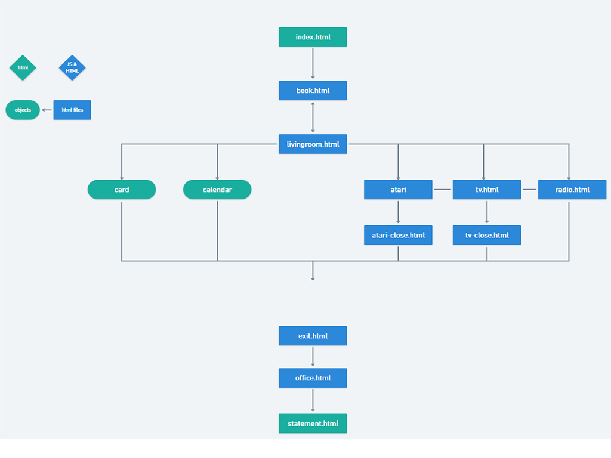

Link

The subject/ theme starting point we are choosing to do Oxford Dictionary’s definition of play,
“Engage in activity for enjoyment and recreation rather than a serious or practical purpose.” (Oxford, 2018).
Excerpts from Anna Anthropy’s book, Rise of the Videogame Zinester, is our chosen
work for informing theory/ logics.
We aim to make our A2 a playful game that builds on the idea of nostalgia. We want to have a room that the
player (you) will explore. The player will have to click on a set amount of buttons and pages before they are able
to proceed to the end game. We want to use the contrast between the warm nostalgic living room and the cold office
environment to show how we often look upon memories as happy and vivid. We want the game to have a playful
feel to it that brings back warm memories to even those of us who weren't alive in the 80's.
Our approach to creating this nostalgic game is to allow players to explore and engage with what’s
available to them (the one room) while they navigate the site.
Excerpts from Sicart’s book regarding play and how the player interacts with a given set
of rules, is the foundation of what play is. Anthropy’s discussion on Play, further emphasizes with how
we will use the act of players engaging with rules to create a different outlook/ experience playing the game. This
fulfills what Anthropy’s emphasizes on the importance of beginnings and endings in a game where our exploration room
theme will provide the player a different experience of play. Our goal is to provide the player with the opportunity
to think about their experience in the game and be able to connect past and present memories. We are devising a start
to end storyline for our exploration game which we believe makes the process of creating our A2 project personal and
meaningful as it will incorperate memories that are fond for many people. Additionally, Anthropy’s work resonated
with us the most and we are eager to see how else each member’s idea of play unfolds in creating our A2 project.